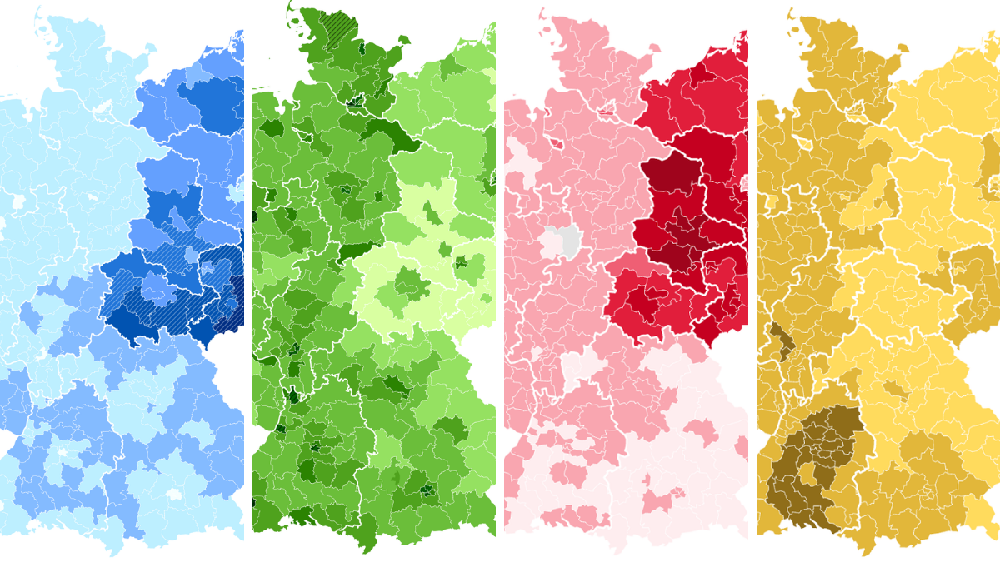
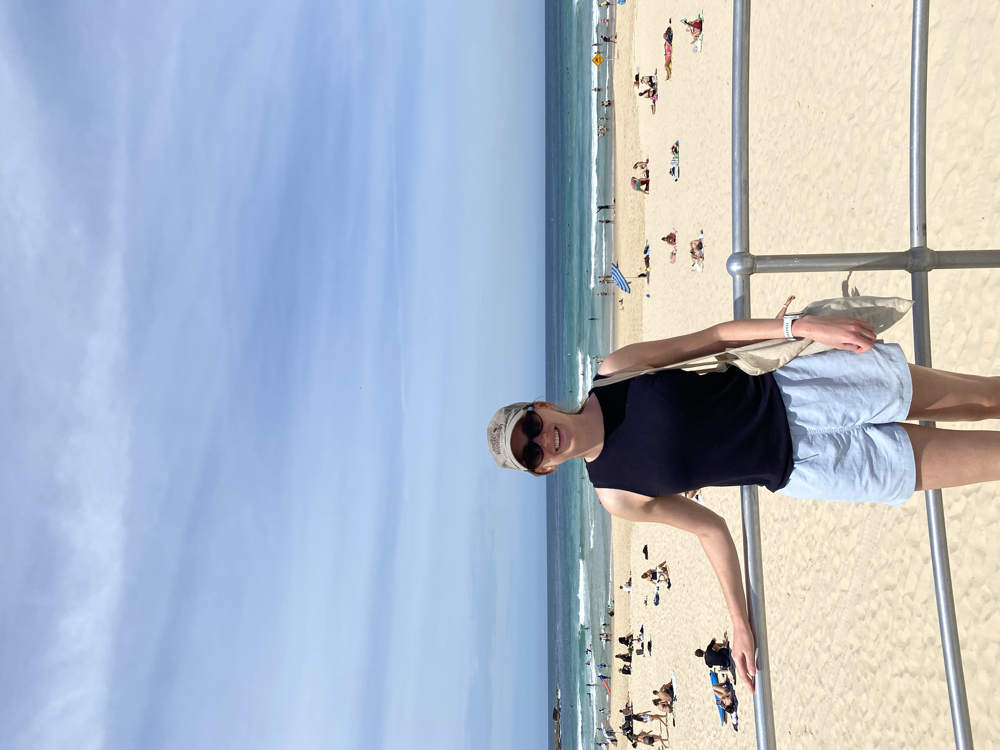

How Germany found itself holding an Italian election
A visual explainer using 35 years worth of election data to outline the key political parties competing in the German election on several maps.
My name is Lucia Mackenzie and I am a data journalist based in POLITICO's Brussels newsroom.
Since moving to Belgium from my native Scotland, I have spent several years reporting on election results and polling data, crafting data-driven explainers of complex EU policies, and creating visually engaging stories about anything and everything that interests me.
Here you can find some of the pieces I am most proud of.

Reporting on elections made me fall in love with data journalism. I had the pleasure of reporting live on the last UK general election from London and have covered various other European elections since. My election coverage is data-driven, with a focus on analysing public opinion in the run up to election day and the eventual vote results. I also enjoy producing clear visual explainers for voters covering useful information about the electoral system and how to register to vote.
As a policy reporter in Brussels I merged my data journalism skills with traditional reporting to write about key issues affecting the EU's agriculture and trade policies. These stories ranged from data-driven explainers of the EU's budget, to live coverage of protests and hearings, and technical analysis of leaked policy documents.
I regularly apply my skills in data-driven research and visualisation to provide unique coverage of global issues. I often report on defense, conflict, and energy supply chains data lens, and find that making original maps significantly enhances coverage of these issues.
I enjoy using trying out new data analysis and visualisation techniques to write about a wide variety of topics in my free time. I recently completed the Columbia Graduate School of Journalism's data journalism summer course, the Lede Program, which gave me the opportunity to experiment using a wide variety of software and data sources.